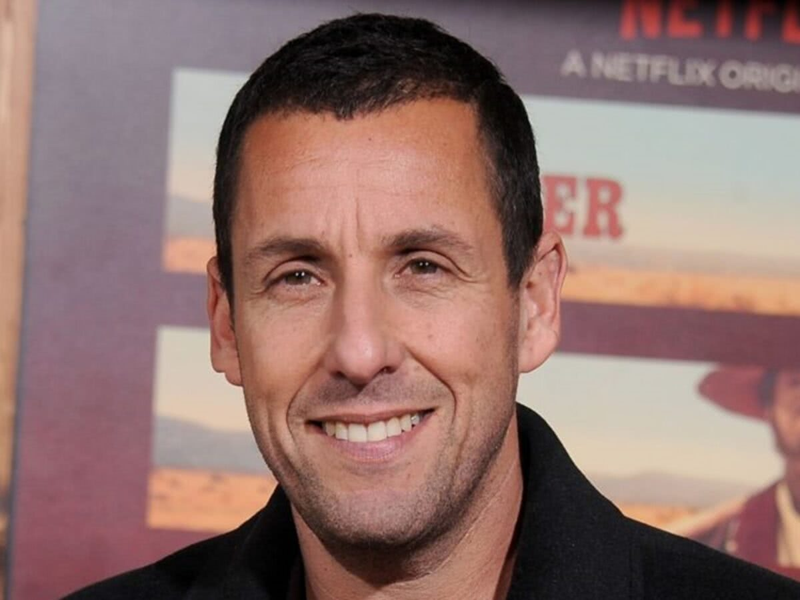
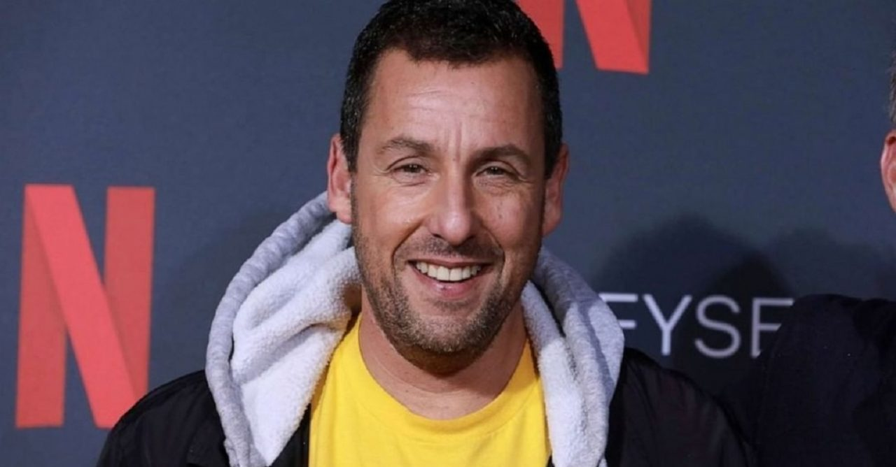
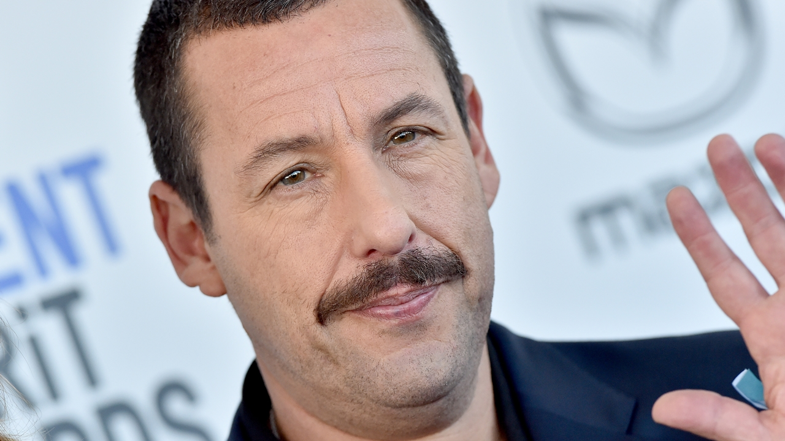
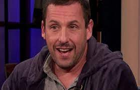

Voltar
Adam Sandler
Idade:55 anos
Ator
Adam Richard Sandler (Brooklyn, Nova York, 9 de setembro de 1966) é um ator, comediante, produtor, roteirista, dublador e músico norte-americano, de origem judaica. Depois de entrar para o elenco do Saturday Night Live, Sandler passou a estrelar vários filmes de Hollywood que juntos arrecadaram mais de US$ 2 bilhões de dólares nas bilheterias.[
Seus papéis no cinema incluem Billy Madison (1995), as comédias esportivas Happy Gilmore (1996) e The Waterboy (1998); a comédia romântica The Wedding Singer (1998), Big Daddy (1999), Mr. Deeds (2002), Bedtime Stories (2008), Grown Ups (2010),Pixels (2015) e dublando Conde Drácula na franquia Hotel Transylvania (2012-2018). No Brasil, Sandler é dublado na maioria dos filmes por Alexandre Moreno, seu dublador oficial.
Alguns de seus filmes, como os amplamente criticados Jack & Jill e That's My Boy, foram duramente criticados, culminando em um segundo lugar compartilhado no número de indicações ao Raspberry Awards (3) e Raspberry Award (11), em ambos os casos perdendo apenas para Sylvester Stallone.
Alguns filmes:
- Gente Grande
- Gente Grande 2
- The ridiculos 6
- Zerando a vida
- Um maluco no golfe


